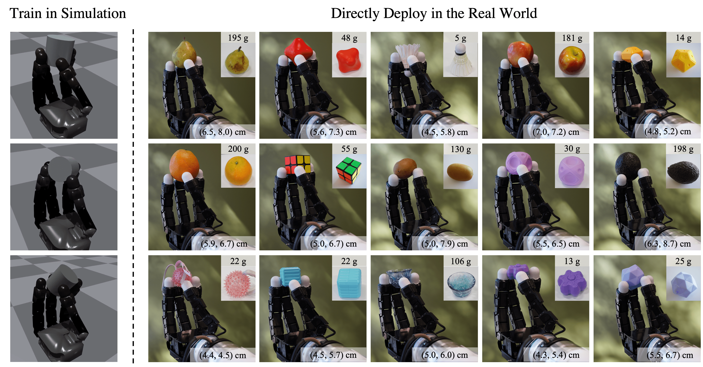

Conference on Robot Learning (CoRL), 2022
Generalized in-hand manipulation has long been an unsolved challenge of robotics. As a small step towards this grand goal, we demonstrate how to design and learn a simple adaptive controller to achieve in-hand object rotation using only fingertips. The controller is trained entirely in simulation on only cylindrical objects, which then – without any fine-tuning – can be directly deployed to a real robot hand to rotate dozens of objects with diverse sizes, shapes, and weights over the z-axis. This is achieved via rapid online adaptation of the robot’s controller to the object properties using only proprioception history. Furthermore, natural and stable finger gaits automatically emerge from training the control policy via reinforcement learning.

We also explore the possibility of perform goal-conditioned in-hand object rotation. This policy can perform different axis rotations according to different inputs.
Training with Cylindrical Objects is critical to the emergence of a stable and high-clerance gait. The following video shows the gait we got if we only use sphere objects for training.
@InProceedings{qi2022hand,
author={Qi, Haozhi and Kumar, Ashish and Calandra, Roberto and Ma, Yi and Malik, Jitendra},
title={{In-Hand Object Rotation via Rapid Motor Adaptation}},
booktitle={Conference on Robot Learning (CoRL)},
year={2022}
}